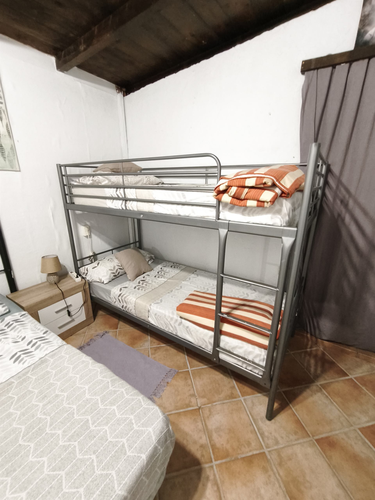
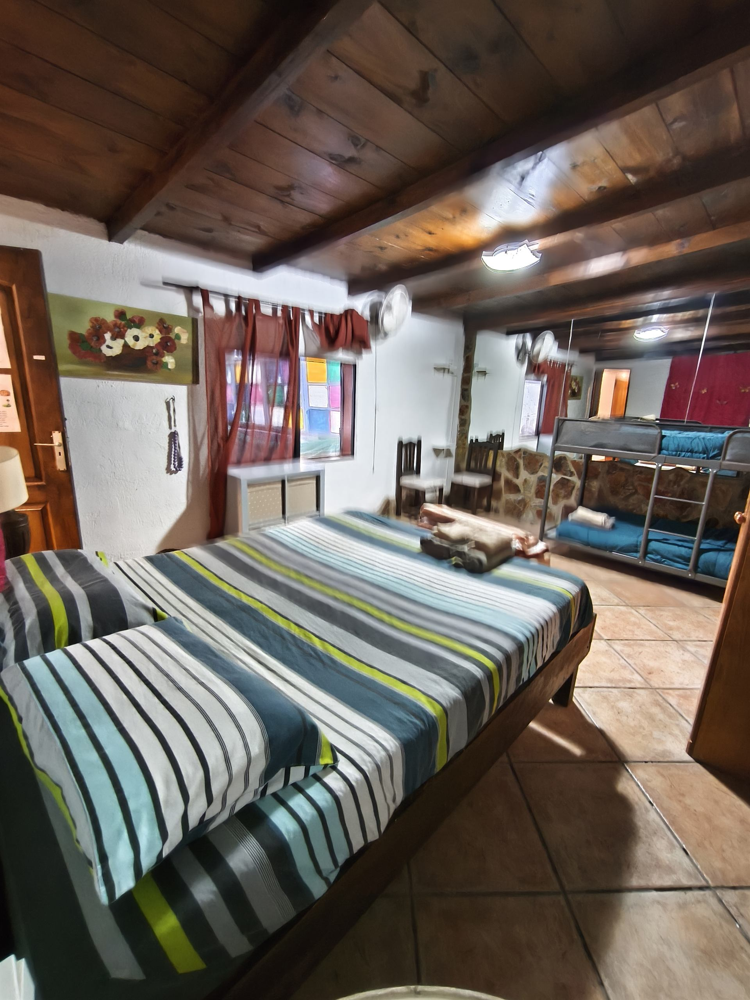

La Surf House Rurale corrisponde alla Casa Rural – Atogo: una casa indipendente immersa nella tranquillità della campagna del sud di Tenerife, proposta nella formula Surf House per gruppi di surfisti e famiglie che cercano spazi generosi, privacy e comfort rurale.
A soli 5 minuti dall'Aeroporto Sud, la posizione garantisce privacy e silenzio, pur rimanendo strategica per raggiungere facilmente El Médano e gli spot surf del sud dell'isola.





La Surf House Rurale si adatta a diversi stili di viaggio e budget, con quattro modalità di prenotazione:
Posto letto in camera condivisa. Ideale per surfer in solitaria o piccoli gruppi che vogliono risparmiare e condividere l'esperienza.
Camera privata con accesso agli spazi comuni. Disponibile in configurazione doppia, tripla, quadrupla o da 6 posti.
Tutta la struttura in esclusiva per il tuo gruppo o famiglia. Massima privacy, spazi interi e nessun compromesso.
Tariffe partner dedicate per organizzatori di surf camp, scuole di surf e retreat sportivi o benessere.
Soluzione che unisce comfort, privacy e atmosfera autentica, offrendo lo spazio giusto per vivere la vacanza con i propri ritmi, senza rinunce.
Contattaci per disponibilita' e prezzi
💬 Contattaci su WhatsApp